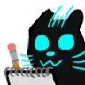

spoilers ahead btw
rain world is the most unique game i've ever played. and i mean it. ask anybody who's played more than 2 hours how they feel about it and they'd all tell you the same thing; there is nothing quite like it. Of course, i wanted to document my journey playing this game. Here is my best recreation, an active playthrough, of the discord channel i am documenting my playthrough in. it may look raggedy as i am still figuring out the details on how to make it... function.
day 1: 3/21/2025
whiplash into a wall then jump NIKO
shovelwithasprout i did finish oneshot tho!!!
whiplash into a wall then jump anyway have fun with your playthrough
shovelwithasprout almost made me cry which is crazy for me at the ending
shovelwithasprout (in response to "anyway have fun with your playthro...") ty!!! rn im at shoreline and a bit lost
whiplash into a wall then jump shoreline is fun
shovelwithasprout do you have any vague directions to give me to go?
whiplash into a wall then jump anywhere
shovelwithasprout dangnabbit okay....
Gobbler[] any knowledge you gain is progress also rain world is nonlinear so there's not really an intended route go anywhere you'd like
shovelwithasprout okk
shovelwithasprout um. there are like 7 black leeches on me *more than seven
whiplash into a wall then jump
shovelwithasprout ykw this is the perfect channel for me because i'm a chronic yapper i'm gonnna tell a little bit about my last runthrough before i continue with updates so basically i used quite a bit of help from wiki's and whatever i could get (besides walkthroughs except for that one part with hte running and hiding in tunnels part before i think the leg???) and that led me all the way to some sky garden area after five pebbles. i was trying to get back to somewhere and potentially beat the game although unlikely and i kept failing at this one really big jump. eventually i gave up because in my mind i had gotten myself softlocked, since trying to go the long way around (back down the leg, through everything) was super difficult i had given up. when i came back to the game i decided to just start anew and here i am! maybe this would be a great thing to make a blog abt on my webdsite also i'm trying to go to where mr. yellow is telling me, since i assume they are trying to lead me towards five pebbles, but they are really bad at giving instructions i'll update soonish once i give more routes a try
Igna 4400 [32/70] Once more, wiki'ing ruins a playthrough Sadge
shovelwithasprout yeah i wish i hadn't so i could have the "true" experience but i was super cautious and only learned what somebody really observant would have learned by that point (i have terrible memory which is good for this specific reason)
whiplash into a wall then jump (in response to "maybe this would be a grea...") you should i looked at your website and it was really neat
shovelwithasprout ty!!! LOOKS TO THE MOON!!!! i forgot about her!!!!! (her? them?)
whiplash into a wall then jump
shovelwithasprout resting before i do the parkour i remember how long it took last time it haunts me !!!!! okay. so. now everything is a little blurry on what i do. is there food in this area? i'm back outside ....i died wrong emoji but it still fits!!
whiplash into a wall then jump
shovelwithasprout okay i'm going to stop for hte night but i'm researching how i can have this as a blog without having to manually add profile pictures to every entry ew.... i need javascript to do what i was wanting to do should i do the harder, more customizable way of reformatting this all into my website page, or should i try to embed it? (if that's possible on a public server) nvm i'd have to manually do it okay! i can do it
day one reflection
overall this was just getting myself familiar with logging and asking for help. also with recording everything on this website. "Gobbler []", or now with the username "whiplash into a wall then jump", was and probably will be the main person helping me. other people jump in, but they don't end up staying for too long. whiplash, if you're reading this, i appreciate you!!
day 2: 3/22/2025
shovelwithasprout okay so i've officially got everything on this channel until this point manually blogged! i may not blog this specific message bc its unimportant but any other messages i'm just copying the message / emojis / images and the username of the person who said it and kinda shuffling it onto my website,, here's the one time i'll mention it unwarranted and from now on i'll only talk abt it if somebody like actually asks me *edit for further clarification depending on my motivation i likely will not have this be up-to-date as manually doing every emoji and username and text takes a long time, surprising no one! it's more of a relic so i can look back and remember my run without relying on a discord channel being up
Fluffy (Do RWSCs/70)
R_Pink47, ping on reply! (in response to "i did finish oneshot tho!!!") from Steam? Which ending?
shovelwithasprout i played it on nintendo and i can't remember what i picked unfortunately oh! i chose the trapped ending!
R_Pink47, ping on reply! So you returned the Sun? Tried booting it up since then? @Golden Star, Million Deaths
Golden Star, Million Deaths (in response to "@Golden Star, Million Deaths") Hath I been summoned?
R_Pink47, ping on reply! (in response to "Hath I been summoned?") Hello niko #3
whiplash into a wall then jump
shovelwithasprout
i did yeah but like i didn't finish the second playthrough
got too bored 
shovelwithasprout guess who made it out of looks to the moon!!!
shovelwithasprout so i've made the decision to just keep heading left mostly because i'm running out of places to explore right
shovelwithasprout
the leeches got to me again
 this time they sprung up when i wasn't looking
this time they sprung up when i wasn't looking
shovelwithasprout i killed a moss monster! (name pending) sea weed.... monster? is my goal to bring looks to the moon a neuron? because i don't got time for allat maybe i need to go up, but i'm stuck trying to figure out how to get there ...just drowned myself...
shovelwithasprout help!!!! i'm trying to get on the right side of the wall in shoreline so i can go up (there's another route down below but its too far down in the water to be possible without help) essentially i need to go through that tunnel at the top but i don't know how to get up there @First Playthrough Helpers help!
Mottlepounce you see that pipe to the right? Where does it go?
shovelwithasprout it goes down a screen, but i don't have a spear and that jump is tough to make
Mottlepounce oh yeah... it's this room
shovelwithasprout do you want another screenshot of the room below or no
Mottlepounce nah. I figured out
shovelwithasprout i see
Mottlepounce so... there's big body of water on the other route. Is there really no other way to cross it?
shovelwithasprout is there a way to get more breath? otherwise i don't think so
Mottlepounce maybe you could see something to help you
shovelwithasprout do the blue fruit / rocks / flowers help with breathing underwater?
Mottlepounce I think you tried using them so you know the answer is no is there anything else?
shovelwithasprout ummm heh....
Mottlepounce there's a general advice applicable to every situation in the game: try grabbing, eating, throwing everything you see in that order 
shovelwithasprout alrgith um hold on i'm going to send another pic is there another route that you can remember to that room? the one on the right side of the wall
Mottlepounce mhm
shovelwithasprout i'm begging on my hands and knees
Mottlepounce do you need a direct answer to this?
shovelwithasprout i'll find a way and come back later if i'm still stupyid
Mottlepounce in case you'd need a hint: the thing to help you is in that deep water room you are trying to cross
Doggo (Ping reply) (in response to "the leeches got to me ...") yeah you only grow to hate these things more and more as you play through the game
shovelwithasprout (in response to "in case you'd need a hint: ...") okay so there aren't fish up above in that cycle but i'll try agpain later
shovelwithasprout
the biggly vulture killed me before i could find a fish 
shovelwithasprout good news!!!! - i made it to the other side of the wall - i climbed up and got to see the top bad news..... - the top doesn't have anything useful - i only got to the top because a camo lizard murdered me and took me up there by themself so.... i lost all of that karma for almost nothing
whiplash into a wall then jump at least you know now Progress !!!
shovelwithasprout progress !!!! but i am completely lost now gobbler "[]" slugcat i must know.... and you can be the most vague you can be.... but where else could i go? mr. yellow tells me to find a neuron but they also disappear half of the time so that doesn't help me that much
whiplash into a wall then jump (in response to "gobbler '[]' slugcat i must...") anywhere being vague
shovelwithasprout damn you and your vagueness!!!!! also i fell and got jumpscared by a moss monster (i got sucked down)
whiplash into a wall then jump
shovelwithasprout i don't know why but that emoji is so precious to me it's the most distraught expression you could get out of a slugcat
whiplash into a wall then jump i love rivflabbergasted
shovelwithasprout found a new path i think i recognze iti ooh a cutscene !!!! NOOOOOOO THE GATE HAS A MAXZ LEVEL KARMA I"M BACKTRACKING WHAT THIS CAN'T BE
whiplash into a wall then jump you can do it !!!
shovelwithasprout (in response to "you can do it !!!...") what do you mean is this a wise decisino
whiplash into a wall then jump get max karma
shovelwithasprout shoulld i try to farm my karma until max mmmm...... okay.....
whiplash into a wall then jump if you want to go there then if not then don't
shovelwithasprout well i worry because of the karma req. last time i had a max karma gate it was shaded citadel
whiplash into a wall then jump
shovelwithasprout and i ended up backtracking because i.... don't like shaded citadel how many gates are in shoreline,, do you know?
whiplash into a wall then jump
shovelwithasprout i assume 3
whiplash into a wall then jump do you want a direct answer to that because there's not really a way i could give an indirect answer
shovelwithasprout i do yes atp all i need to do to keep my rain world 'purity' is to not look at any spoiler channels or wiki
whiplash into a wall then jump Correct !!! i think i had to check to make sure
shovelwithasprout okay yeah then there must be some gate underneath moon's place? wait. oh no
whiplash into a wall then jump
shovelwithasprout i think shaded is after shore i say 'after' but i mean like the path i took last time
whiplash into a wall then jump there's not really an order to the areas
shovelwithasprout hmm i need to ponder this at the very least i can say that i've thoroughly explored shoreline
Aeter or did you (idk)
day 3: 3/31/2025
Metalcat101 [equipment acquirer] I think if you wander around for long enough youll figure it out
shovelwithasprout yeah definitely
shovelwithasprout
i have finals week and isasp testing next week so i'll probably not be very active for a little bit
i already am tired majority of the time so this does affect my free time
Metalcat101 [equipment acquirer] lol me too
shovelwithasprout OH MY GOD ITS FINALLY UP I HAVE SO MUCH TO TELL YOU
Gobbler []
shovelwithasprout so first of all i came back to shoreline and finally followed mr. yellow then that led me to shaded citadel terrifying i know BUT i didn't really end up interacting with the spider centipede things all that much kind of just trial and error but i had to like go through all of memory crypts and last stretch of sc in one cycle to get past but afterwards um hold up i forgot what's after memory crypts OH wait is it exterior??
Gobbler []
shovelwithasprout so i worked my way through there with a grabby pill bug and a spear and rn i'm at the underhang my dilemma is that i have a very long journey and there's not a shelter that i'm aware of so i think i'll need to employ a lot of trial and error
Gobbler [] good luck
shovelwithasprout ty! i'll do that either later tonight if i get bored or later this week
Doggo (ping reply) (in response to "so i worked my way through...") grappling bug beloved i LOVE grappling bugs
Gobbler [] maybe don't reveal creature names
Doggo (ping reply) i didnt think it counted as a spoiler? they know what the creature is just not the name if someone called smth a “green reptile” referring to it as a green lizard isnt a spoiler if they've already seen it but alr i'll change
R_Pink47, ping on reply! Generally we want to use the same name as the owner of the thread.
Gobbler [] some popular names for things reveal their uses and also it's fun to see what names new players come up with The Chart™️…
Ruffles the Honorary Felper 2/70 The Chart...
Metalcat101 [equipment acquirer] The bunker I think you are thinking of is a bit hard to find, if you want to know where it is just @ me or something (Good luck)
taking a break from this game for a bit!
updating this page has definitely been annoying at the very least, and documenting even made rainworld feel like a job. (this happens to a lot of my hobbies which then burns me out, i'm not new to the concept) as a result, there's still more messages to be seen, yet i cannot bring myself to transcribe them. i urge you, if you want to see more, to either read the (little bit) left of my incomplete playthrough documentation, or play (buy or pirate idc) the original game and see everything for yourself. thank you to everybody who helped me and talked me through the toughest parts of this game, and while i may never finish it, at least i can say that i wouldn't have gone nearly as far without the help of the community.